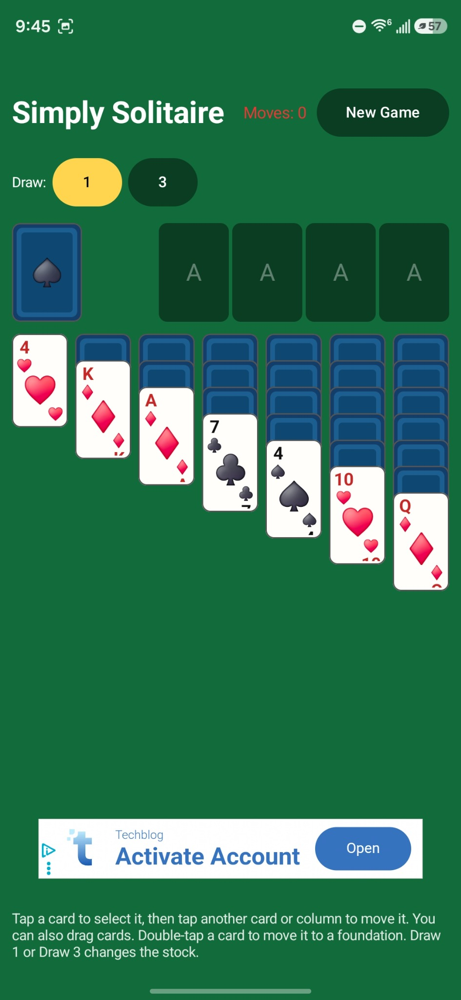

OPEN CIRCUIT • SOFTWARE & APPS
Simply Solitaire
Simply Solitaire is a free, simple Android solitaire game with draw-one and draw-three play, drag-and-drop cards and a clean interface.

About Simply Solitaire
Simply Solitaire is a simple Android solitaire app built around classic Klondike-style card play. It keeps the interface focused on the game, with draw-one and draw-three options, movable cards, foundation play, and a new-game control.
The goal is straightforward: a lightweight solitaire game that is easy to understand and quick to play without unnecessary menus or clutter.
FEATURES
What it does
Draw 1 or Draw 3
Choose between the two common stock-draw styles.
Simple controls
Tap to select and move cards, with drag-and-drop support.
Foundation play
Double-tap a card to move it to a foundation when possible.
Lightweight Android game
A focused solitaire experience without unnecessary complexity.
Frequently asked questions
Is Simply Solitaire free?
Yes. The app is provided as a free Android download.
How do you play Simply Solitaire?
Select cards and move them between columns or foundations. The app supports draw-one and draw-three stock options.